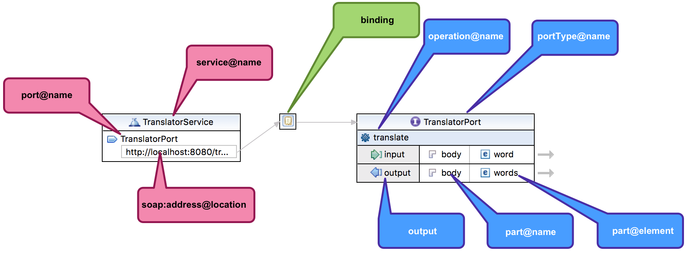

Screencast ukazuje, ako vytvárať webové služby nad protokolom SOAP s použitím Eclipse IDE a pluginu Java EE Web Developer Tools.
Schéma pre správy
Schéma zobrazená vo videu pochádza z článku Tvoríme XML schému pomocou Eclipse IDE.
Návrh WSDL
Ak máme ujasnenú schému, môžeme navrhovať WSDL. V Eclipse môžeme zvoliť New | File | Web Services | WSDL File a vytvoriť súbor words.wsdl.
V dialógu potrebujeme vyplniť štyri základné veci:
- cieľový menný priestor: reprezentuje jednoznačný menný priestor pre deklarácie v tomto WSDL dokumente. Dôležité je dbať na:
- unikátnosť menného priestoru (v celom šírom svete…): pomenovanie URL adresou ju vie automaticky zabezpečiť. V ukážkach sa odporúča použiť adresu s prefixom
urn:exampleurčenú pre príklady a interné dokumenty. - potenciálnu možnosť navštíviť URL adresu a získať z nej autoritatívnu (kanonickú) podobu WSDL súboru. Toto však nie je bezpodmienečne nutné, ani vyžadované.
- unikátnosť menného priestoru (v celom šírom svete…): pomenovanie URL adresou ju vie automaticky zabezpečiť. V ukážkach sa odporúča použiť adresu s prefixom
- prefix menného priestoru:
- vzhľadom na ťažkopádnosť pomenovaní menných priestorov možno využiť skratkový “alias”, alebo prefix. V tomto prípade môžeme radostne použiť prefix
api(alebo akýkoľvek iný).
- vzhľadom na ťažkopádnosť pomenovaní menných priestorov možno využiť skratkový “alias”, alebo prefix. V tomto prípade môžeme radostne použiť prefix
- štýl webovej služby:
- ak chceme zachovať portabilitu a interoperabilitu, využime jedinú možnosť: document/literal.
- protokol:
- využime možnosť SOAP.
V tomto prípade však vynechajme štýl, protokol i generovanie kostry služby, pretože si ho naklikáme vo vizuálnom editore WSDL.

Výsledné WSDL
<?xml version="1.0" encoding="UTF-8" standalone="no"?>
<wsdl:definitions xmlns:api="urn:example:translator"
xmlns:wsdl="http://schemas.xmlsoap.org/wsdl/"
xmlns:xsd="http://www.w3.org/2001/XMLSchema" name="translator"
targetNamespace="urn:example:translator"
xmlns:soap="http://schemas.xmlsoap.org/wsdl/soap/">
<wsdl:types>
<xsd:schema xmlns:xsd="http://www.w3.org/2001/XMLSchema">
<xsd:import namespace="urn:example:translator"
schemaLocation="translator.xsd">
</xsd:import>
</xsd:schema>
</wsdl:types>
<wsdl:message name="translateRequest">
<wsdl:part name="body" element="api:word"></wsdl:part>
</wsdl:message>
<wsdl:message name="translateResponse">
<wsdl:part name="body" element="api:words"></wsdl:part>
</wsdl:message>
<wsdl:portType name="TranslatorPortType">
<wsdl:operation name="translate">
<wsdl:input message="api:translateRequest"></wsdl:input>
<wsdl:output message="api:translateResponse"></wsdl:output>
</wsdl:operation>
</wsdl:portType>
<wsdl:binding name="TranslatorPortBinding"
type="api:TranslatorPortType">
<soap:binding style="document"
transport="http://schemas.xmlsoap.org/soap/http" />
<wsdl:operation name="translate">
<soap:operation
soapAction="urn:example:translator/NewOperation" />
<wsdl:input>
<soap:body use="literal" />
</wsdl:input>
<wsdl:output>
<soap:body use="literal" />
</wsdl:output>
</wsdl:operation>
</wsdl:binding>
<wsdl:service name="TranslatorService">
<wsdl:port name="TranslatorPort"
binding="api:TranslatorPortBinding">
<soap:address
location="http://localhost:8080/translator" />
</wsdl:port>
</wsdl:service>
</wsdl:definitions>Literatúra
- Od WSDL k webovej službe – tvoríme vlastné WSDL. Článok o budovaní webovej služby na základe WSDL, na zelenej lúke.
- WSDL Essentials, Chapter 6 in Web Services Essentials [Distributed Applications with XML-RPC, SOAP, UDDI & WSDL], O’Reilly 2002.